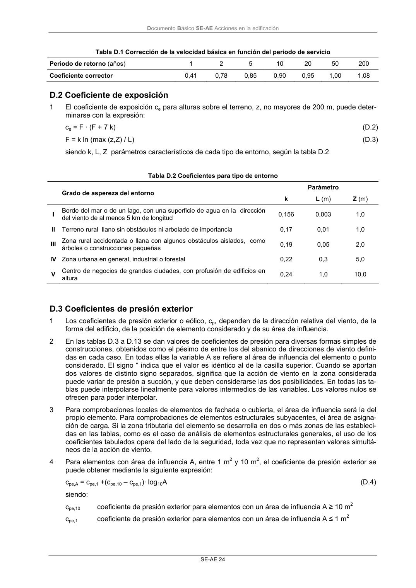

DB-SE-AE · D.2 Coeficiente de exposición · versión 2009-04 · capa oficial
Formatos: JSON compacto · Markdown · PDF fuente
Ámbito del documento · texto del ámbito · documento y tablas
ID técnico a0041 · PDF pág. 28 · jerarquía no validada por persona · contrastado con el literal de la página 28 (candidato tipográfico); no validado por persona · padre: raíz
D.2 Coeficiente de exposición 1 El coeficiente de exposición ce para alturas sobre el terreno, z, no mayores de 200 m, puede deter- minarse con la expresión: ce = F · (F + 7 k) (D.2) F = k ln (max (z,Z) / L) (D.3) siendo k, L, Z parámetros característicos de cada tipo de entorno, según la tabla D.2 Tabla D.2 Coeficientes para tipo de entorno Parámetro Grado de aspereza del entorno k L (m) Z (m) I Borde del mar o de un lago, con una superficie de agua en la dirección del viento de al menos 5 km de longitud 0,156 0,003 1,0 II Terreno rural llano sin obstáculos ni arbolado de importancia 0,17 0,01 1,0 IIIZona rural accidentada o llana con algunos obstáculos aislados, como árboles o construcciones pequeñas 0,19 0,05 2,0 IV Zona urbana en general, industrial o forestal 0,22 0,3 5,0 VCentro de negocios de grandes ciudades, con profusión de edificios en altura 0,24 1,0 10,0

PDF fuente redistribuible: copia fiel enlazada en esta página (SHA256 verificado).